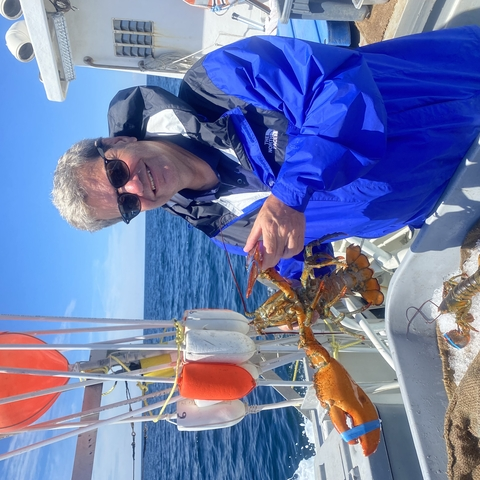
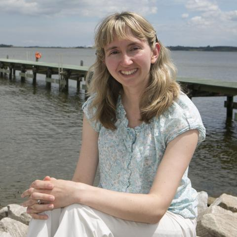
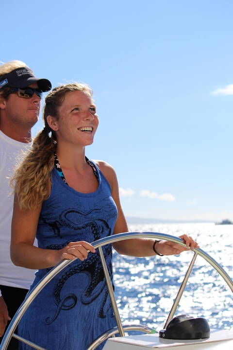

University of Maryland Center for Environmental Science
secor@umces.edu
UMCES Profile
Lab Website

Blue Wave Consulting Group
helenbailey@bluewaveconsultinggroup.com
lyubchich@umces.edu
Website
rbell@umces.edu
obrien@umces.edu

ksilva@umces.edu
jctesta@umces.edu